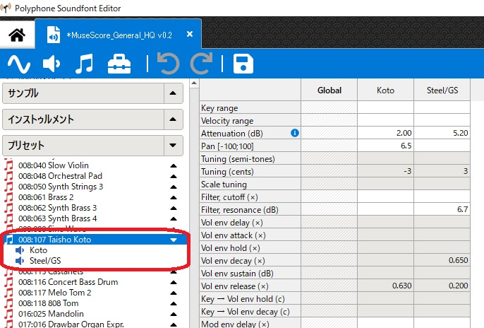
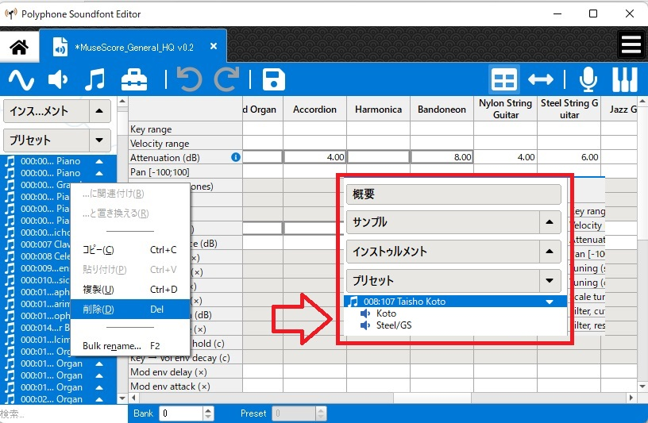
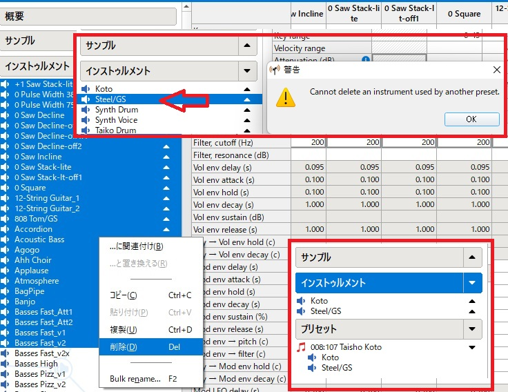
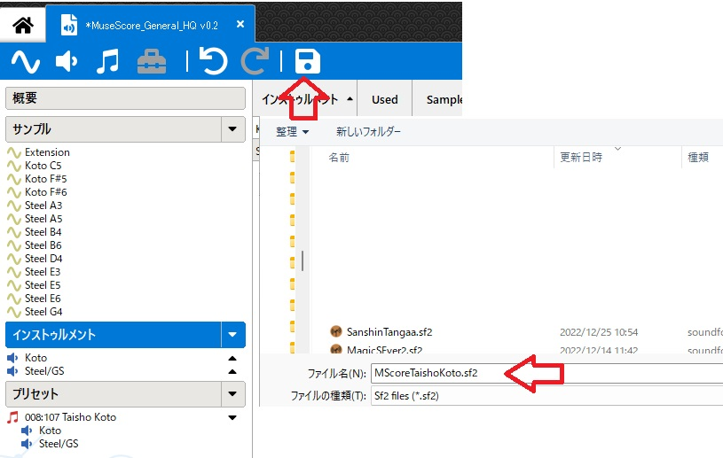
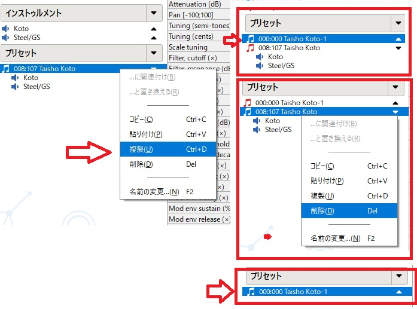
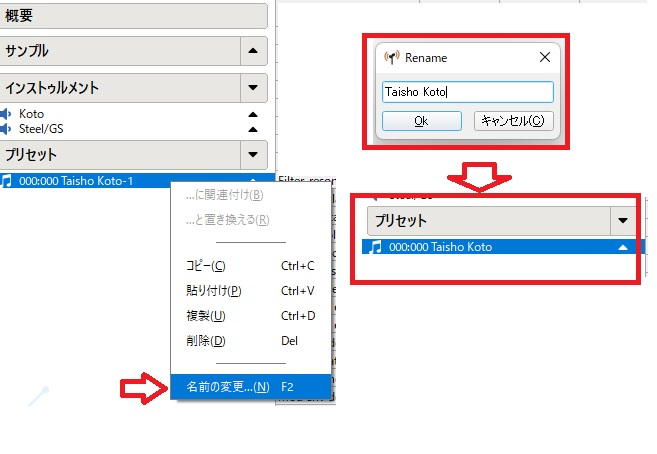
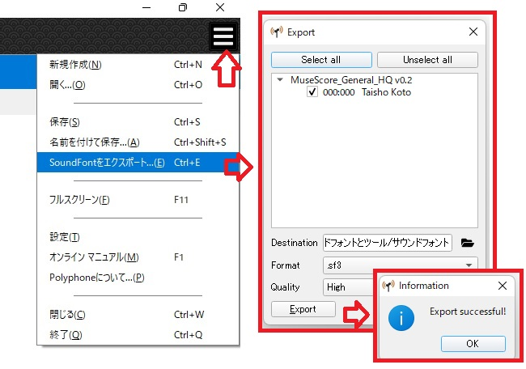

MuseScoreのサウンドフォントから個別をサウンドフォントを作成する
MuseScore4は303に近いサウンドフォントがあります。MuseScore3とファイ
ル名は違うものの中味はまったく同じです。MuseScore4で利用できるのは楽器
のみ。MuseScoreの楽譜一覧ではなぜか五百以上もありますが。
作成するために,サウンドフォントを作成するPolyphoneのソフトを利用します。
※Polyphoneのインストールや使い方はサイトで検索でききるので割愛
大正琴の個別サウンドフォントSF3を作成する手順
1.MuseScore4のサウンドフォントを作業用の複写
万が一潰してしまうと再インストールしなければいけなくなるので。
MuseScore4のサウンドフォントは、ここにあります。
C:\Program Files\MuseScore 4\sound\MS Basic.sf3
２．大正琴だけ(Taisyo koko)のサウンドファイル(MScoreTaishoKoto.sf2)を
作成する
PolyphoneでMS Basic.sf3を開く

プリセットでTaisyo koko以外を削除する

インストゥルメントでTaisyo koko以外を削除する
※全部選択して削除した場合でも、先のプリセットで大正琴が残っている
場合は、警告をだし関係するインストゥルメント消せない。

サンプルでも同様にTaisyo koko以外を削除する
※全部選択して削除した場合でも、先のプリセットで大正琴が残っている
場合は、警告をだし関係する関係サンプル消せない。
保存ボタン（フロピーのマーク）を押しファイル名をMScoreTaishoKoto
とし保存する
※なお、ここで作成したものはバンク番号などが,000.000でないので
Musescore4では個別サウンドフォントとして扱わない

３．バンク番号、プログラム番号を修正する
元の大正琴のプリセットを複写し、新しプリセットを作成する
※複写されたプリセットのバンク番号、プログラム番号は000:000になる
元の大正琴のプリセットを削除する

複写したの大正琴のプリセットの名前を元の名前に戻す

４．圧縮ファイルsf3を作成する
右上の横三棒を押し、soundfontをエクスポートを選択し、sf3でexport
これで、拡張子がsf3のMScoreTaishoKoto.sf3ができる
